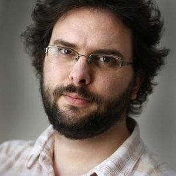
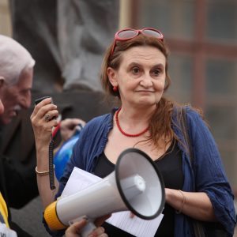

Václav Havel, ve skautu dostal přezdívku Chrobák. Navštěvoval internátní gymnázium, které vedl lekář a skaut Ladislav Filip. Havlovou oblíbenou činnosti ve skautu bylo sjíždění řek. Skautem zůstal i přes komunistické období a navštěvoval 21.oddíl, který byl pod hlavičkou Sokola.
Erik Tabery, začínal se skautingem na Malé straně v Praze.Také byl tajně skautem přes komunistické roky.

Bill Gates, zakladatel Microsoftu, byl členem skautského oddílu v Seattlu v 60. a 70. letech. V roce 2010 byl za své služby oceněn nejvyšším skautským vyznamenáním v USA, Silver Buffalo.
Eva Holubová, česká filmová herečka, také navštěvovala skautský oddíl v Praze.